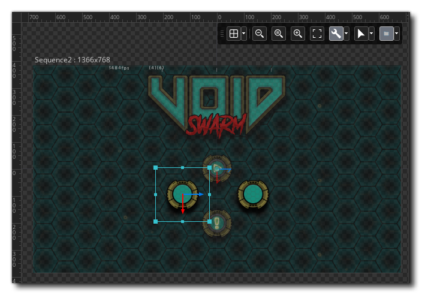
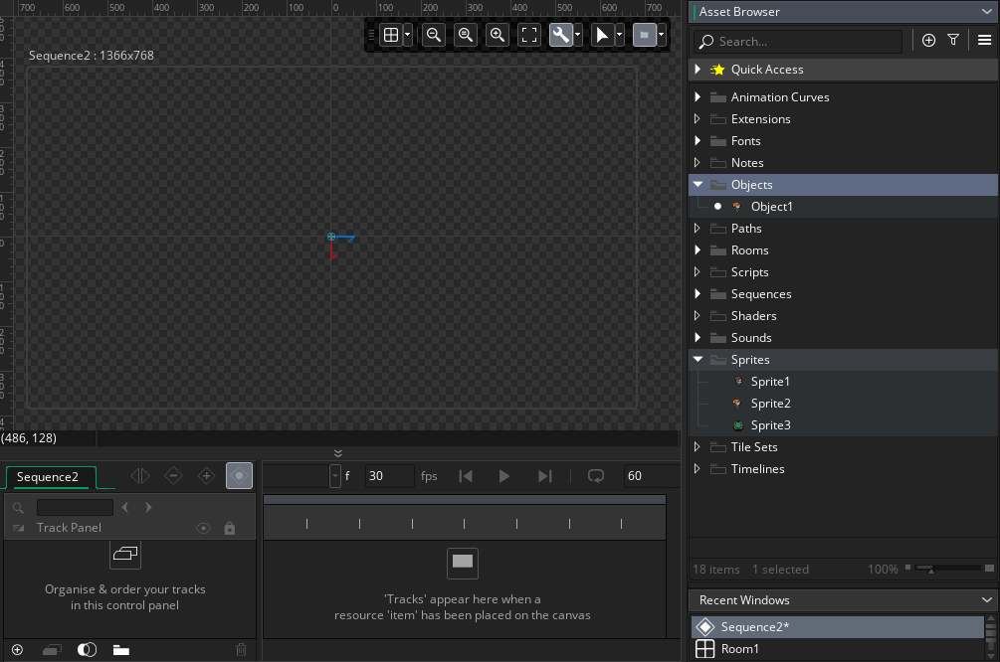
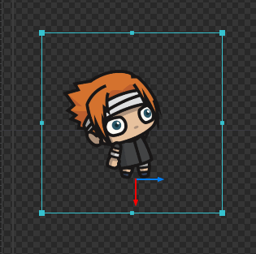
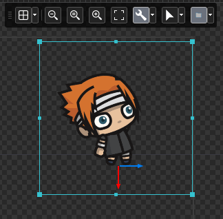
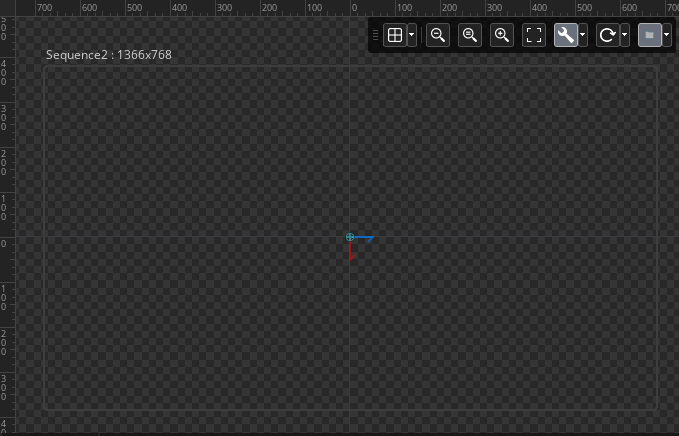
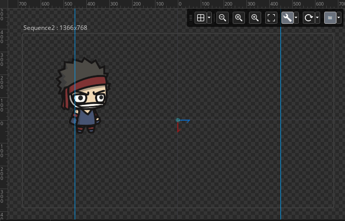
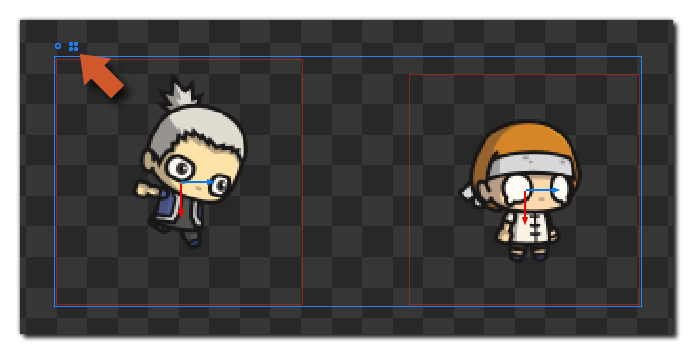
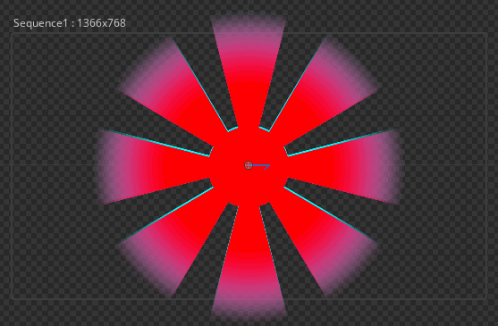
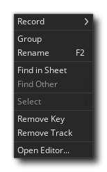
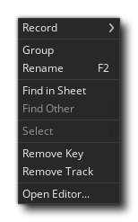

When creating sequences for your projects a large part of the
work will be done in the canvas of the Sequence Editor. The
canvas is simply the area that will be used to contain the sequence
elements, and it also defines what will be shown when the sequence
is added to a room to be displayed. When you first create a
sequence, the canvas will be set to the default size of 1366px by
768px, but this can be changed from the Toolbox by clicking
the  beside the Canvas Frame
Toggle button:
beside the Canvas Frame
Toggle button: 
The canvas size defines a visual area within which to place the assets that make up the sequence, but the frame is simply a guide to size and will not affect how things are rendered, ie: if you place a sprite asset outside the frame and add the sequence to a room, the asset will still be rendered. The frame is also used to house any reference images that you want to use to guide the positioning of assets within the sequence. A reference image can be added from the same Canvas Options menu where you set the size of the canvas frame, and will be used as a background image for the sequence canvas. this permits you to position things according to - for example - a UI mock-up from a project artist: 
Note that reference images are not stored with the project and will not be rendered when the sequence is added to a room.
Once you have the canvas set up how you want you can start to
add assets to it. This is done simply by dragging them from the
Asset Browser into the canvas, which will create an Asset
Track in the Track
Panel:

The assets that can be added to a sequence are as follows:
- Sprites
- Objects
- Sounds
- Sequences
Once you have added the assets that are required, they can be placed at their initial positions for the animation, and can also be transformed using the various different Transform Control Widgets. These are accessed in two different ways:
- By moving the mouse to the edges of the asset in the canvas and
clicking
 and dragging (note that the cursor
will change to show the different transforms that will be
changed):
and dragging (note that the cursor
will change to show the different transforms that will be
changed):
 - By using the transform widget at the origin of the asset, which
you can change from the canvas Toolbox:

When you have set the initial transforms for the asset (if
required) you can then use the canvas to add keys to the
asset track in the Track Panel. A simple example of how this works
would be a simple position transform, where you would place the
asset at it's start position, then move the playhead in the Dope
Sheet to the frame you want the movement to end, then move the
asset again:

As you can see in the image above, the new positions are automatically being recorded on the track as we have enabled "Automatically Record Changes" in the Track Panel. You can also see that a dotted line has been added to the canvas view to indicate the movement through time of the asset. If you do not have the automatic recording enabled, you can still add points by moving the asset, then setting the playhead and then finally clicking the "Record a new key" button.
One final point worth mentioning is that the canvas permits you
to use and add smart guides, which are guidelines that can
be added to the canvas so that assets can be aligned against them.
By default the canvas will show horizontal and vertical guides
around the center point, as well as a rectangular guide around the
"edge" of the sequence canvas, based on the size of the canvas.
These guides will not be rendered in the final sequence when
added to a room and are just there to help you get an idea of space
and to help position things. You can also add your own guides by
clicking  on a ruler and then dragging into
the canvas:
on a ruler and then dragging into
the canvas:

To remove a guide, simply click on it and then drag it back towards
the rulers again. When you have guides added to a sequence, moving
an asset around will then "snap" to the guide when the bounding box
or origin is near enough, and extra smart guides will be
shown to mark the distances between assets as well as to mark
assets that are all on the same guide or at the same position
(these are coloured differently):

RMB Menu And Navigation
To navigate around the canvas view, you can use the same basic
controls as the for a regular Workspace, ie: Use the middle mouse
button  and drag to pan the canvas (or
alternatively use the space key and the left mouse button
and drag to pan the canvas (or
alternatively use the space key and the left mouse button
 ), and you can scroll horizontally
with the mouse wheel
), and you can scroll horizontally
with the mouse wheel  or zoom in and out using the
or zoom in and out using the
 /
/  key and
the mouse wheel
key and
the mouse wheel  .
.
To select an asset, simply click the left mouse button
 on it, or you can select multiple
assets using
on it, or you can select multiple
assets using  /
/  and
and
 to click on each asset. You can
also select multiple assets using
to click on each asset. You can
also select multiple assets using  and
then clicking
and
then clicking  and dragging. This will create a
"box" in the canvas and any asset that touches the box area will be
selected.
and dragging. This will create a
"box" in the canvas and any asset that touches the box area will be
selected.
When you have an asset or assets selected, you can cut, copy and
paste them using the  /
/  + "X",
+ "X",
 /
/  + "C"
and
+ "C"
and  /
/  + "V"
key combinations.
+ "V"
key combinations.
Note that when multiple assets are selected in the canvas, there will be a bounding box shown for each asset, and a larger bounding box shown for all of them combined. You can change how this bounding box behaves from the icons at the top left corner: 
Clicking on the circle icon will change the transform control widget to the origin of the full bounding box for all instances selected, while clicking the box icon will show an individual control widget for each asset in the selection. You can move grouped assets around and copy/paste them etc... just as you would for a single asset.
If you have multiple assets that are overlapping and wish to
select a specific one without disturbing the rest, then you can
hover the mouse over them to bring up the Item Toolbox which
will show a list of icons for each item under the mouse. You can
then click on one of these items to select it and edit it:

You also have a number of additional options available to you from
the right mouse button  when you click it on any asset in
the sequence: 
when you click it on any asset in
the sequence: 
The options available here are:
- Record: this option permits you to record parameter keys
for the asset(s), and if you hover over it you'll see options to
record the scale, rotation or position.
- Group: Selecting this will create a new group folder in
the Track Panel, and move the selected asset(s) into it.
- Rename: When you click this, the track will be
highlighted in the Track Panel, and the name will be made editable,
ready for you to change it.
- Find In Sheet: When you click this, the selected asset
will have it's key highlighted in the Dope Sheet.
- Find Other: When you click this, a list of all other
assets of the same type will be shown for you to select one
from.
- Select: When you click this, a list of all assets that
are overlapping at the clicked position will be shown, and you can
select any of them for editing.
- Remove Key: When you select this, the asset track key
will be removed from the dope sheet at the current playhead
position. The track itself will still exist, as will any parameter
tracks it contains, and you can re-add another asset to the track
by dragging it from the Asset Browser into the dope sheet.
- Remove Track: This will remove the asset track (and
parameter tracks if any are assigned to it) from the Track Panel,
as well as all the keys related to it in the Dope Sheet.
- Open Editor: This will open the asset for editing in the default editor for the type of asset.